3 Reference
3.1 Points and Vectors (pt and vec)
| (require metapict/pt-vec) | package: metapict |
3.1.1 Points and Vectors
Points and vectors are represented as pt and vec structures respectively. Think of points as positions and of vectors as displacements.
> (def A (pt 3 4)) > A (pt 3 4)
> (pt-x A) 3
> (penwidth 4 (draw (pt 0 0) (pt 1/2 1/2) (pt 1 0)))
3.1.1.1 Predefined Points and Vectors
The most common points and vectors have predefined names.
> (penwidth 4 (draw (color "red" (draw origo)) (color "green" (draw (pt+ origo north))) (color "blue" (draw (pt+ origo south))) (color "magenta" (draw (pt+ origo left))) (color "purple" (draw (pt+ origo right))))) 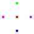
3.1.1.2 Point Operations
procedure
A : pt? v : vec? (pt+ A B) → pt? A : pt? B : pt? (pt+ A B-or-v ...) → pt? A : pt B-or-v : (or pt? vec?)
The form (pt+ A v) returns the displacement of the point A with the vector v. That is, (a1+v1,a2+v2) is returned.
The form (pt+ A B) adds the coordinates of A and B pairwise. The point A is thus displaced with the vector OB. That is, (a1+b1,a2+b2) is returned.
The form (pt+) returns origo, (pt 0 0).
The form (pt+ A) returns the point A.
> (pt+ (pt 1 2) (vec 3 7)) (pt 4 9)
> (pt+ (pt 1 2) (pt 3 7)) (pt 4 9)
> (pt+) (pt 0 0)
> (pt+ (pt 1 2)) (pt 1 2)
> (pt+ (pt 0.3 0.4) (vec 3 0) (vec 4 0)) (pt 7.3 0.4)
The form (pt- A v) returns the displacement of the point A with the opposite of vector v. If A=(a1,a2) and v=(v1,v2) then the vector (a1-v1,a2-v2) is returned.
The form (med 1/3 A B) returns the point that lies one-third of the way from A to B.
> (def A (pt 0 0)) > (def B (pt 2 1)) > (list (med 0 A B) (med 1/3 A B) (med 1/2 A B) (med 2/3 A B) (med 1 A B)) (list (pt 0 0) (pt 2/3 1/3) (pt 1 1/2) (pt 4/3 2/3) (pt 2 1))
> (set-curve-pict-size 100 50)
> (with-window (window -0.2 2.2 -0.1 1.1) (penwidth 4 (draw* (for/list ([r '(0 1/3 1/2 2/3 1)] [c '("red" "orange" "yellow" "green" "blue")]) (color c (draw (med r A B))))))) 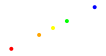
> (require racket/math) > (set-curve-pict-size 50 50)
> (with-window (window -1.1 1.1 -1.1 1.1) (penwidth 4 (draw* (for/list ([θ (in-range 0 (* 2 pi) (/ (* 2 pi) 12))]) (pt@ 1 θ)))))
> (pt@d 1 45) (pt 0.7071067811865476 0.7071067811865475)
> (pt@ 1 (/ pi 4)) (pt 0.7071067811865476 0.7071067811865475)
3.1.1.3 Vector Operations
In this section the coordinates of vecs v and w will be referred to as v=(v1,v2) and w=(w1,w2).
In terms of displacements the vector sum v+w can be thought of as the result of the displament v followed by the displacement w.
> (def v (vec 2 0)) > (def w (vec 0 3)) > (def v+w (vec+ v w)) > v+w (vec 2 3)
> (define (arrow v [offset (vec 0 0)]) (def A (pt+ origo offset)) (draw-arrow (curve A -- (pt+ A v)))) > (ahlength (px 12))
> (with-window (window -0.2 3.2 -0.2 3.2) (penwidth 2 (draw (color "red" (arrow v)) (color "green" (arrow w v)) (color "blue" (arrow v+w))))) 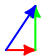
> (rot90 (pt 1 0)) (pt 0 1)
> (rot90 (vec 1 0)) (vec 0 1)
> (rot-90 (pt 1 0)) (pt 0 -1)
> (rot-90 (vec 1 0)) (vec 0 -1)
3.2 Colors
| (require metapict/color) | package: metapict |
procedure
(make-color* name) → (is-a?/c color%)
name : string? (make-color* r g b α) → (is-a?/c color%) r : real? g : real? b : real? α : 1.0
Given a color name as a string, make-color* returns a color% object.
Given real numbers to use as the color components, make-color* works like make-color, but accepts both non-integer numbers, and numbers outside the range 0–255. For a real number x, the value used is (min 255 (max 0 (exact-floor x))).
The optional argument α is the transparency. The default value is 1. Given a transparency outside the interval 0–1, whichever value of 0 and 1 is closest to α is used.
> (def red-ish (make-color* 300 -12 42.3)) > (def purple (make-color* "purple")) > (color->list red-ish) '(255 0 42 1.0)
> (color->list purple) '(160 32 240 1.0)
> (with-window (window 0 1 0 1) (beside (color red-ish (fill unitsquare)) (color purple (fill unitsquare)))) 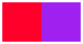
procedure
c : (is-a?/c color%) p : pict? (color f c p) → pict? f : real? c : (is-a?/c color%) p : pict?
As a match pattern, (color r g b a) matches both color% objects and color names (represented as strings). The variables r, g, and, b will be bound to the red, green, and, blue components of the color. The variable a will be bound to the transparency.
> (with-window (window 0 1 0 1) (apply beside (for/list ([f (in-range 0 11/10 1/10)]) (color f "red" (fill unitsquare))))) > (require racket/match)
> (match "magenta" [(color r g b a) (list r g b a)]) '(255 0 255 1.0)
procedure
(color->list c) → (listof real?)
c : color
> (color->list "magenta") '(255 0 255 1.0)
> (color->list (color+ "red" "blue")) '(255 0 255 1.0)
> (color->list (color* 0.5 "blue")) '(0 0 127 1.0)
> (with-window (window 0 1 0 1) (apply beside (for/list ([t (in-range 0 11/10 1/10)]) (color (color-med t "red" "yellow") (fill unitsquare))))) 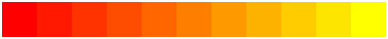
procedure
(color-med* t cs) → (is-a?/c color%)
t : real? cs : (listof color)
> (with-window (window 0 1 0 1) (apply beside (for/list ([t (in-range 0 11/10 1/10)]) (color (color-med* t '("red" "yellow" "blue" "green")) (fill unitsquare))))) 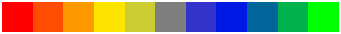
procedure
(change-red c r) → (is-a?/c color%)
c : color r : real?
procedure
(change-blue c r) → (is-a?/c color%)
c : color r : real?
procedure
(change-green c r) → (is-a?/c color%)
c : color r : real?
procedure
(change-alpha c r) → (is-a?/c color%)
c : color r : real?
> (color->list (change-red "blue" 42)) '(42 0 255 1.0)
3.3 Pict
| (require metapict/pict) | package: metapict |
3.3.1 Pict Adjusters
All images in MetaPict are represented as picts. A pict is a structure that holds information on how to draw a picture. A pict can be rendered to produce an image in various formats such as PNG, PDF, and SVG.
The standard library pict defines several functions to construct and manipulate picts. MetaPict provides and offers some extra operations. Since they are not MetaPict specific, they are also useful outside of the world of MetaPict.
A few of the pict operations are provided under new names. The basic concept in MetaPict is the curve. Therefore it makes sense for, say, circle to return a curve. In the pict library the name circle returns a pict, so to avoid a name conflict it is exported as circle-pict.
An attempt has been made to make the pict the last argument of all operations. This explains the existance of a few functions whose functionalities overlap with the pict library.
The operations in this section operate on picts, so use draw to convert curves into picts.
3.3.1.1 Pen Adjusters
> (penwidth 4 (beside (pencolor "red" (brushcolor "orange" (filldraw unitcircle))) (pencolor "red" (filldraw unitcircle)))) 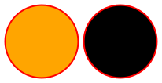
> (beside (penwidth 3 (penscale 2 (draw unitcircle))) (penscale 3 (penwidth 2 (draw unitcircle))) (penwidth 6 (draw unitcircle)))
> (define (styled-circle style) (draw (color "red" (filldraw unitsquare)) (penstyle style (draw unitcircle)) (label-bot (~a style) (pt 0 0)))) > (def styles1 '(solid transparent hilite)) > (def styles2 '(dot short-dash long-dash dot-dash))
> (above (beside* (map styled-circle styles1)) (beside* (map styled-circle styles2))) 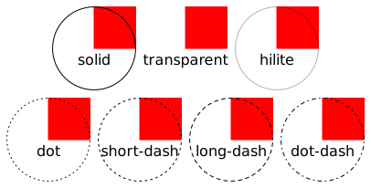
> (define (squiggle cap) (def l (curve (pt -1/2 0) -- (pt 0 0) .. (pt 1/2 1/2))) (penwidth 20 (draw (pencap cap (color "red" (draw l))) (pencap 'butt (color "black" (draw l))) (label-bot (~a cap) (pt 0 -1/2))))) > (def caps '(round projecting butt)) > (beside* (map squiggle caps)) 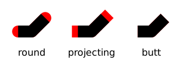
> (define (squiggle join) (def l (curve (pt -1/2 0) -- (pt 0 0) .. (pt 1/2 1/2))) (draw (penwidth 40 (penjoin join (draw l))) (penwidth 2 (color "red" (draw (circle (pt 1/4 -1/3) 1/3)))) (label-bot (~a join) (pt 0 -1/2)))) > (def joins '(round bevel miter)) > (beside* (map squiggle joins)) 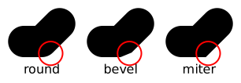
> (def teacher-pen (new pen% [color "red"] [width 1] [style 'solid] [cap 'round] [join 'round] [stipple #f])) > (pen teacher-pen (draw unitcircle)) 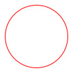
3.3.1.2 Brush Adjusters
> (def hatch (new brush% [color "black"] [style 'crossdiag-hatch])) > (brush hatch (filldraw unitcircle))
procedure
(brushcolor c p) → pict
c : color? p : pict?
> (brushcolor "red" (fill unitcircle))
procedure
(brushstyle s p) → pict
s : style? p : pict?
> (define (styled-circle style) (draw (color "red" (filldraw (scaled 0.7 unitsquare))) (brushcolor "black" (brushstyle style (fill (scaled 0.7 unitcircle)))) (brushcolor "white" (draw (label-bot (~a style) (pt 0 -0.7)))))) > (def styles1 '(solid transparent hilite)) > (def styles2 '(bdiagonal-hatch fdiagonal-hatch crossdiag-hatch)) > (def styles3 '(horizontal-hatch vertical-hatch cross-hatch))
> (above (beside* (map styled-circle styles1)) (beside* (map styled-circle styles2)) (beside* (map styled-circle styles3))) 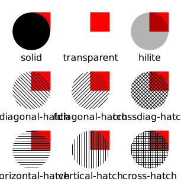
procedure
(brushstipple s p) → pict
s : style? p : pict?
> (set-curve-pict-size 256 256) > (define stipple (bitmap "texture.jpeg"))
> (with-window (window -1 1 -1 1) (beside stipple (blank 64 64) (brushstipple (pict->bitmap stipple) (fill (circle 1))))) 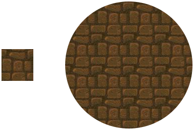
procedure
(brushgradient TODO:TO-BE-DETERMINED) → pict
TODO:TO-BE-DETERMINED : gradient?
3.3.1.3 Pict Combiners
Same as vc-append
Same as hc-append
3.4 Bezier Curves
| (require metapict/bez) | package: metapict |
A Bezier curve from point A to point B with control points A+ and B- is represented as an instance of a bez structure: (bez A A+ B- B).
Graphically such a curve begins at point A and ends at point B. The curve leaves point A directed towards the control point A+. The direction in which the curve enters the end point B is from B-.
The points A and B are referred to as start and end point of the Bezier curve. The points A+ and B- are refererred to as control points. The point A+ is the post control of A and the point B- is the pre control of B.
Most users will not have a reason to work with bez structures directly. The curve constructor is intended to cover all use cases.
Each point on the Bezier curve corresponds to a real number t between 0 and 1. The correspondence is called a parameterization of the curve. The number t is called a parameter. Thus for each value of the parameter t between 0 and 1, you get a point on the curve. The parameter value t=0 corresponds to the start point A and the parameter value t=1 corresponds to the end point.
Let’s see an example of a Bezier curve and its construction. 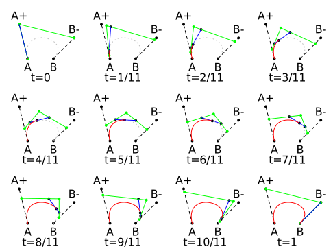
procedure
(point-of-bez b t) → pt?
b : bez? t : real?
> (def b (bez (pt 0 0) (pt 0 1) (pt 3 2) (pt 5 0)))
> (for/list ([t '(0 1/2 1)]) (point-of-bez b t)) (list (pt 0 0) (pt 7/4 9/8) (pt 5 0))
procedure
(bez-reverse b) → bez
b : bez?
> (def b (bez (pt 0 0) (pt 0 1) (pt 3 2) (pt 5 0))) > (def (γ t) (point-of-bez b t)) > (def (φ t) (point-of-bez (bez-reverse b) t)) > (def ts (in-range 0 5/4 1/4)) > (cons 'γ (for/list ([t ts]) (γ t))) (list 'γ (pt 0 0) (pt 1/2 45/64) (pt 7/4 9/8) (pt 27/8 63/64) (pt 5 0))
> (cons 'φ (for/list ([t ts]) (φ t))) (list 'φ (pt 5 0) (pt 27/8 63/64) (pt 7/4 9/8) (pt 1/2 45/64) (pt 0 0))
> (def b (bez (pt 0 0) (pt 0 1) (pt 3 2) (pt 5 0))) > (defv (b1 b2) (split-bez b 1/3))
> (with-window (window -1 6 -1 6) (penwidth 4 (draw (color "red" (draw b1)) (color "blue" (draw b2))))) 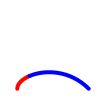
procedure
(bez-subpath b t0 t1) → bez?
b : bez? t0 : real? t1 : real?
> (def b (bez (pt 0 0) (pt 0 1) (pt 3 2) (pt 5 0)))
> (with-window (window -1 6 -1 6) (for/draw ([t (in-range 0 5/4 1/4)] [c '("red" "blue" "green" "magenta")]) (penwidth 4 (beside (draw b) (color c (draw (bez-subpath b t (+ t 1/4)))))))) 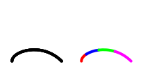
procedure
(bez-intersection-point b1 b2) → (or pt? #f)
b1 : bez? b2 : bez?
> (def b1 (bez (pt 0.0 0.0) (pt 1.0 1.0) (pt 2.0 2.0) (pt 3.0 3.0))) > (def b2 (bez (pt 0.0 3.0) (pt 1.0 2.0) (pt 2.0 1.0) (pt 3.0 0.0))) > (defv (p) (bez-intersection-point b1 b2)) > p (pt 1.4999999999999996 1.4999999999999996)
> (def b3 (bez (pt 0 4) (pt 1 4) (pt 2 4) (pt 3 4))) > (bez-intersection-point b1 b3) #f
> (with-window (window 0 5 0 5) (draw b1 b2 (color "red" (penwidth 8 (draw p))) b3)) 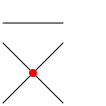
procedure
(bez-intersection-times b1 b2) →
real? real? b1 : bez? b2 : bez?
> (def b1 (bez (pt 0 0) (pt 1 1) (pt 2 2) (pt 3 3))) > (def b2 (bez (pt 0 3) (pt 1 2) (pt 2 1) (pt 3 0))) > (defv (t1 t2) (bez-intersection-times b1 b2)) > (defv (p1 p2) (values (point-of-bez b1 t1) (point-of-bez b2 t2))) > (list p1 p2)
(list
(pt 1.4999999999999998 1.4999999999999998)
(pt 1.4999999999999998 1.5000000000000002))
> (def b3 (bez (pt 0 4) (pt 1 4) (pt 2 4) (pt 3 4))) > (bez-intersection-times b1 b3) #f
> (with-window (window 0 5 0 5) (draw b1 b2 (color "red" (penwidth 8 (draw p1))) b3))
procedure
(bez-intersection-point-and-times b1 b2)
→ (or (list pt? real? real?) #f) b1 : bez? b2 : bez?
> (def b1 (bez (pt 0.0 0.0) (pt 1.0 1.0) (pt 2.0 2.0) (pt 3.0 3.0))) > (def b2 (bez (pt 0.0 3.0) (pt 1.0 2.0) (pt 2.0 1.0) (pt 3.0 0.0))) > (bez-intersection-point-and-times b1 b2)
(list
(pt 1.4999999999999996 1.4999999999999996)
0.4999999999999999
0.4999999999999999)
> (defm (list p t1 t2) (bez-intersection-point-and-times b1 b2)) > (def b3 (bez (pt 0 4) (pt 1 4) (pt 2 4) (pt 3 4))) > (bez-intersection-times b1 b3) #f
> (with-window (window 0 5 0 5) (draw b1 b2 (color "red" (penwidth 8 (draw p))) b3))
procedure
(draw-bez dc b [ #:transformation t #:pen-transformation pent]) → (void) dc : (is-a dc<%>) b : bez? t : trans? = #f pent : trans? = #f
procedure
(draw-bezs dc bs [ #:transformation t #:pen-transformation pent]) → (void) dc : (is-a dc<%>) bs : (listof bez?) t : trans? = #f pent : trans? = #f
procedure
(bez->dc-path b [t]) → (is-a? dc<%>)
b : bez? t : trans? = #f
procedure
(bezs->dc-path bs [t]) → (is-a? dc<%>)
bs : (listof bez?) t : trans? = #f
procedure
(bez/dirs+tensions p0 p3 w0 w3 [τ0 τ3]) → bez?
p0 : pt? p3 : pt? w0 : vec? w3 : vec? τ0 : real? = 1 τ3 : real? = 1
> (defv (p0 p3 w0 w3 τ0 τ3) (values (pt 0 0) (pt 5 0) (vec 0 1) (vec 0 -1) 1 1)) > (def b (bez/dirs+tensions p0 p3 w0 w3 τ0 τ3)) > b
(bez
(pt 0 0)
(pt 2.041077998578922e-16 3.333333333333333)
(pt 5.000000000000001 -3.333333333333335)
(pt 5 0))
> (with-window (window -5 11 -5 11) (draw b))
procedure
(control-points p0 p3 θ φ τ0 τ3) → bez?
p0 : pt? p3 : pt θ : real? φ : real? τ0 : real? τ3 : real?
> (defv (p0 p3 θ φ τ0 τ3) (values (pt 0 0) (pt 5 0) pi/2 -pi/2 1 1)) > (defv (p1 p2) (control-points p0 p3 θ φ τ0 τ3)) > (def b (bez p0 p1 p2 p3)) > b
(bez
(pt 0 0)
(pt 2.041077998578922e-16 3.333333333333333)
(pt 5.0 -3.333333333333333)
(pt 5 0))
> (with-window (window -5 11 -5 11) (draw b))
3.5 Curves
| (require metapict/curve) | package: metapict |
General curves are drawn by gluing together a series of Bezier curves. Such a curve can be either open or closed (a loop).
The representation of a curve consists simply of a list of Bezier curves and a flag indicating whether the curve is closed. For two consecutive Bezier curves in the list, the end point of the first and the start point of the second must be equal.
struct
(struct curve: (closed? bezs) #:extra-constructor-name make-curve:) closed? : boolean? bezs : (listof bez?)
Most users will not have a reason to work with curve: structures directly. The curve constructor is intended to cover all use cases. The constructor can be used to construct both curved as well as straight lines.
The syntax of curve will be detailed later, but let’s look at some examples. First when multiple points separated by .. are given, a smooth curve through the points will be constructed: (curve p0 .. p1 .. p2 .. p3 .. p4).
As a concrete example, let’s look at the points (0,0) (60,40) (40,90) (10,70) (30,50).
> (def p0 (pt 0 0)) > (def p1 (pt 60 40)) > (def p2 (pt 40 90)) > (def p3 (pt 10 70)) > (def p4 (pt 30 50))
> (define (label-points) (for/draw ([i '(0 1 2 3 4)] [p (list p0 p1 p2 p3 p4)] [d (list (lft) (rt) (top) (lft) (top))]) (dot-label (~a i) p d))) > (set-curve-pict-size 120 120)
> (with-window (window -20 100 -20 100) (draw (curve p0 .. p1 .. p2 .. p3 .. p4) (label-points)))

> (with-window (window -20 100 -20 100) (draw (curve p0 .. p1 .. p2 .. p3 .. p4 .. cycle) (label-points)))
There is more to the curve constructor (it is possible to specify directions in which a curve enters and leaves a points), but let’s return to operations defined on curves.
The number of Bezier curves used to represent the curve is called the length. The function curve-length returns this length n.
Each point on a curve corresponds to a real number t between 0 and n. The correspondence is called a parameterization of the curve. The number t is called a parameter. Thus for each value of the parameter t between 0 and n, you get a point on the curve. The parameter value t=0 corresponds to the start point A and the parameter value t=n corresponds to the end point.
procedure
(curve-length c) → integer?
c : curve?
> (let () (define c (curve p0 .. p1 .. p2 .. p3 .. p4)) (define (label-parameter-values) (for/draw ([i '(0 1 2 3 4)] [d (list (lft) (rt) (top) (lft) (top))]) (define p (point-of c i)) (dot-label (~a "t=" i) p d))) (set-curve-pict-size 120 120) (with-window (window -20 100 -20 100) (draw c (label-parameter-values))))
Since the start and end point of a curve are used often, the following shorthands are available:
procedure
(start-point c) → pt?
c : curve?
> (let () (def c (curve (pt 0 0) .. (pt 1 3) .. (pt 2 5))) (list (start-point c) (end-point c))) (list (pt 0 0) (pt 2.0 5.0))
Given a curve c parameterized from 0 to n from a start point to an end point, one can use curve-reverse to create a curve where the parameterization is reversed.
procedure
(curve-reverse c) → curve?
c : curve?
> (let () (def c (curve (pt 0 0) .. (pt 1 3) .. (pt 2 5))) (def r (curve-reverse c)) (list (start-point c) (end-point c)) (list (start-point r) (end-point r))) (list (pt 2 5) (pt 0.0 0.0))
procedure
(curve-append c1 c2) → curve?
c1 : curve? c2 : curve?
> (let () (def c1 (curve (pt 0 0) .. (pt 1 1))) (def c2 (curve (pt 1 1) .. (pt 2 0))) (def c (curve-append c1 c2)) (with-window (window 0 2 0 2) (draw (linewidth 6 (color "red" (draw c1))) (linewidth 6 (color "blue" (draw c2))) (linewidth 2 (color "white" (draw c)))))) 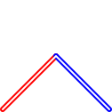
We will now turn to operations involving two curves. The first problem we will look at is intersections between two curves.
procedure
(intersection-times c1 c2) → (or #f number?)
c1 : curve? c2 : curve?
> (let () (def c1 (curve (pt 0 0) .. (pt 2 3))) (def c2 (curve (pt 0 2) .. (pt 4 1))) (defv (t u) (intersection-times c1 c2)) (list (list 't t 'u u) (list (point-of c1 t) (point-of c2 u))))
(list
'(t 0.5714285714285715 u 0.2857142857142857)
(list
(pt 1.1428571428571432 1.7142857142857146)
(pt 1.1428571428571428 1.7142857142857144)))
procedure
(intersection-point c1 c2) → (or #f pt?)
c1 : curve? c2 : curve?
> (let () (def c1 (curve (pt 0 0) .. (pt 2 4))) (def c2 (curve (pt 0 4) .. (pt 4 0))) (def P (intersection-point c1 c2)) (with-window (window 0 4 0 4) (draw c1 c2 P (dot-label-rt "P" P))))
procedure
(intersection-point-and-times c1 c2)
→ (or #f (list pt? number? number?)) c1 : curve? c2 : curve?
procedure
(intersection-points c1 c2) → (list-of pt?)
c1 : curve? c2 : curve?
> (let () (def c1 (curve (pt 0 0) .. (pt 3 1) .. (pt 2 3) .. (pt 2 1) .. (pt 2.5 1))) (def c2 (curve (pt 0 1) .. (pt 1 3) .. (pt 3 0) .. (pt 4 1))) (def Ps (intersection-points c1 c2)) (with-window (window -1 4 -1 4) (draw c1 (linewidth 2 (color "blue" (draw c2))) (color "red" (for/draw ([P Ps]) (dot-label "" P (cnt))))))) 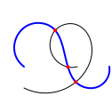
If a curve is too long, the function subcurve can be used to make a shorter one.
> (let () (def c (curve (pt 0 0) up .. (pt 1 3) .. (pt 2 0) .. (pt 3 3) .. (pt 3 2))) (def s (subcurve c 1 3)) (with-window (window -1 4 -1 4) (draw (linewidth 6 (color "red" (draw c))) (linewidth 2 (color "white" (draw s))))))
procedure
(cut-before c1 c2) → curve?
c1 : curve? c2 : curve?
> (let () (def c1 (curve (pt 0 0) .. (pt 2 2))) (def c2 (curve (pt 0 2) .. (pt 2 0))) (def c (cut-before c1 c2)) (with-window (window 0 2 0 2) (draw (linewidth 6 (color "red" (draw c1))) (linewidth 6 (color "blue" (draw c2))) (linewidth 2 (color "white" (draw c)))))) 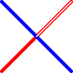
procedure
(cut-after c1 c2) → curve?
c1 : curve? c2 : curve?
> (let () (def c1 (curve (pt 0 0) .. (pt 2 2))) (def c2 (curve (pt 0 2) .. (pt 2 0))) (def c (cut-after c1 c2)) (with-window (window 0 2 0 2) (draw (linewidth 6 (color "red" (draw c1))) (linewidth 6 (color "blue" (draw c2))) (linewidth 2 (color "white" (draw c)))))) 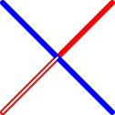
procedure
(post-control c t) → pt?
c : curve? t : number?
procedure
(pre-control c t) → pt?
c : curve? t : number?
procedure
(direction-of c t) → vec?
c : curve? t : number?
> (let () (def c (curve (pt 1 0) .. (pt 1 3) .. (pt 4 1))) (def p (point-of c 1)) (def d (direction-of c 1)) (with-window (window 0 6 0 6) (draw c (draw-arrow (curve p .. (pt+ p d))) (dot-label-top "P" p))))
> (let () (def c1 (curve (pt 1 0) .. (pt 1 3))) (def c2 (curve (pt 1 0) .. (pt 1 3) .. cycle)) (list (cyclic? c1) (cyclic? c2))) '(#f #t)
procedure
(intercurve α c1 c2) → curve?
α : number? c1 : curve? c2 : curve?
In other words we can interpolate curves.
> (let () (def heart ; a heart shaped curve (curve (pt 100 162) .. (pt 140 178) right .. (pt 195 125) down .. (pt 100 0) (curl 0) .. up (pt 5 125) .. right (pt 60 178) .. (pt 100 162))) (def fig-heart ; a heart pict (with-window (window -100 300 -100 300) (draw heart))) (def heart-line ; used to interpolate from line to heart below (curve (pt 100 0) -- (pt 300 0) -- (pt 200 0) -- (pt 100 0) -- (pt 0 0) -- (pt -100 0) -- (pt 100 0))) (def fig-line-to-heart ; shows interpolation between two curves of same length (with-window (window -100 300 -100 300) (draw* (for/list ([i (in-range 8)]) (def α (/ i 8)) (color α "red" (draw (intercurve α heart-line heart))))))) (beside fig-heart fig-line-to-heart))
procedure
<path-specification-fragment : <path-specification-fragment
Concretely, curve converts a path specification into a list of bezier curves. In the most basic form, a call to curve has one of these forms (but see path operations for more options):
(curve p0 j0 p1 j1 ... pn)
(curve p0 j0 p1 j1 ... pn jn)
Here p0, p1, ... are points and j0, j0, ... are path joins. A path join describes how the two points on either side of the path join are to be connected. The most common path joins are .. and --.
> (defv (A B C D) (values (pt -0.3 -0.3) (pt 0.3 -0.3) (pt 0.3 0.3) (pt -0.3 0.3)))
> (let () (beside* (list (draw (curve A .. B .. C .. D)) (draw (curve A -- B -- C -- D)) (draw (curve A .. B .. C .. D .. cycle)) (draw (curve A -- B -- C -- D .. cycle)))))
The function curve is a smart constructor, so it accepts a wider range of inputs and rewrites the given path specification into a basic one as the step of computing the list of Bezier curves. In particular, you can use direction specifiers before and/or after a point, to control the direction in which the curve will enter and leave a point.
... j- ds- p ds+ j+ ...
Here the - and + indicates “before” and “after” the point.
Finally curve supports path operations. A path operation f can be placed after a point p:
... p f more ...
In order to process a path specification, curve will make a first pass to remove path operations. When ... p f more ... is encountered, the path operation (a function) f will be called with (list p f more ...) as input. The output is a new path specification where f has been removed.
A few path operations such as /-, -/, --++, -arc, -rectangle are builtin. A user can define their own path operations.
Given two points and a path join (and some extra pieces of information), curve must compute the two control points between the two points.
The standard path joins are .. and --.
value
.. : tension-and? = (tension-and 1 1)
value
value
cycle : 'cycle
struct
struct
(struct controls-and join (c- c+))
c- : pt? c+ : pt?
struct
(struct tension-and join (τ- τ+))
τ- : real? τ+ : real?
struct
ds- : direction-specifier? j : join? ds+ : direction-specifier?
procedure
(tension τ) → tension-and?
τ : real?
The “tension” controls how “stiff/bendable” the curve is.
The tension numbers τ- and τ+ are real numbers. If a tension τ is positive, that tension is used. If a tension τ is negative, it is interpreted as “at least abs(τ)”. The default tension is 1. A tension of ∞ gives an (almost) linear curve.
Note: (tension τ) will return (tension-and τ τ), this represents the same tension before and after a point.
> (defv (A B C) (values (pt -0.3 -0.3) (pt -0.3 0.0) (pt 0.3 0.3)))
> (let () (define points (penwidth 4 (color "red" (draw A B C)))) (beside* (list (draw (curve A .. B (tension 3/4) C) points) (draw (curve A .. B (tension 1) C) points) (draw (curve A .. B (tension 2) C) points) (draw (curve A .. B (tension 3) C) points) (draw (curve A .. B (tension 10) C) points)))) 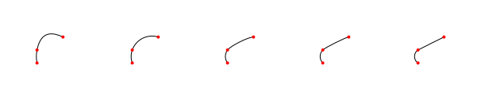
The path join controls-and explicitly gives the Bezier control points between the two points. This can be used if a piece of a curve has been computed elsewhere.
> (defv (A B C D) (values (pt -0.3 -0.3) (pt -0.3 0.0) (pt 0.3 0.3) (pt 0.6 0.3)))
> (let () (define points (penwidth 4 (color "red" (draw A B C D)))) (beside (draw (curve A (controls-and B C) D) points) (draw (bez A B C D) points))) 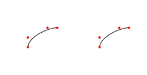
The last basic path join is (full-join ds- j ds+) which allows one to specify an direction ds- for the curve to enter the point and a direction ds+ to leave the points as well as the tension.
A direction specifier can either be empty (represented by #f), an explicit direction (a vec?) or a curl amount.
A join with direction specifiers before and after turns into a full-join.
As an example
... p0 ds0+ j0 ds1- p1 ...
will be rewritten as (full-join ds0+ j0 ds1-).
> (defv (A B C) (values (pt -0.3 -0.3) (pt -0.3 0.0) (pt 0.3 0.3)))
> (let () (define points (penwidth 4 (color "red" (draw A B C)))) (define (fj v1 v2) (full-join v1 .. v2)) (beside* (list (draw (curve A .. B (fj (vec 0 1) (vec 1 0)) C) points) (draw (curve A .. B (fj (vec 0 1) (vec 0 1)) C) points) (draw (curve A .. B (fj (vec -1 0) (vec 0 1)) C) points) (draw (curve A .. B (fj (vec -1 0) (vec 1 0)) C) points) (draw (curve A .. B (fj (vec 1 1) (vec 1 1)) C) points)))) 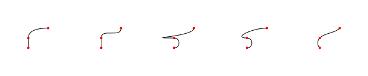
> (defv (A B C) (values (pt -0.3 -0.3) (pt -0.3 0.0) (pt 0.3 0.3)))
> (let () (define points (penwidth 4 (color "red" (draw A B C)))) (define (fj v1 v2) (full-join v1 .. v2)) (beside* (list (draw (curve A .. B (fj #f (vec 1 0)) C) points) (draw (curve A .. B (fj #f (vec 0 1)) C) points) (draw (curve A .. B (fj #f (vec 0 1)) C) points) (draw (curve A .. B (fj #f (vec 1 0)) C) points) (draw (curve A .. B (fj #f (vec 1 1)) C) points)))) 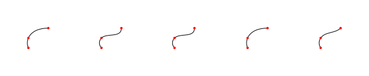
3.6 Transformations
| (require metapict/trans) | package: metapict |
Given a curve c, one can use a transformation to calculate a new curve c′ with a different shape or placement. Transformations such as scaling, reflection, rotation and translation appear again and again in graphics programs. These transformations are all affine transformations. An important property of affine transformations is that the composition of two affine transformations is a new affine transformation. If a series of transformations are to be applied to a large set of points or curves, it is more efficient to compute the composed transformation first, and then apply that to the large set.
In MetaPict a transformation can be applied to instances of curve, pt, vec and bez. Furthermore a transformation can be applied to another transformation.
> (def c (curve (pt -1/2 1/2) -- (pt -1/2 0) -- (pt 1/2 0)))
> (penwidth 4 (draw (color "black" (penwidth 8 (draw c))) (color "red" (draw ((shifted 1/2 1/2) c))) (color "blue" (draw ((rotated (/ π 2)) c))) (color "green" (draw (((shifted 0 -0.1) flipy) c))))) 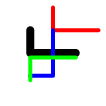
Mathematically an affine transformation transforms a point (x,y) into the point
x′ = ax + cy + e
y′ = bx + dy + f
where a, b, c, d, e and f are real numbers.
struct
(struct trans (a b c d e f) #:extra-constructor-name make-trans) a : real? b : real? c : real? d : real? e : real? f : real?
x′ = ax + cy + e
y′ = bx + dy + f
The trans struct is applicable and can be applied to instances of curve, pt, vec and bez. Also a trans can be applied to another trans.
The most used transformations have specialized constructors (see below), so trans is seldom used directly.
> (def t (shifted 10 20)) > (t (pt 1 2)) (pt 11 22)
> (t (vec 1 2)) (vec 11 22)
> (t (curve (pt 1 2) -- (pt 3 4)))
(curve
#f
(list
(bez
(pt 11 22)
(pt 11.666666666666666 22.666666666666668)
(pt 12.333333333333334 23.333333333333332)
(pt 13 24))))
> t (trans 1 0 0 1 10 20)
> (t t) (trans 1 0 0 1 20 40)
> ((t t) t) (trans 1 0 0 1 30 60)
value
rotated180 : trans? = (trans -1 0 0 -1 0 0)
value
rotated270 : trans? = (trans 0 -1 1 0 0 0)
> (def c (curve (pt 0 0) -- (pt 1 0)))
> (penwidth 4 (draw (color "black" (draw (identity c))) (color "red" (draw (rotated90 c))) (color "blue" (draw (rotated180 c))) (color "green" (draw (rotated270 c))))) 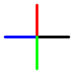
> (def c (curve (pt 1/4 1/4) -- (pt 1 1)))
> (penwidth 4 (draw (color "black" (draw (identity c))) (color "red" (draw (flipx c))) (color "blue" (draw (flipy c))))) 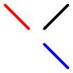
(x,y) slanted a = (x+ay,y)
> (def c (curve (pt 0 0) -- (pt 0 1)))
> (penwidth 4 (draw (color "black" (draw (identity c))) (color "red" (draw (slanted 1/3 c))) (color "blue" (draw (slanted 1/2 c))) (color "green" (draw (slanted 1 c))))) 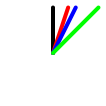
(x,y) scaled a = (ax,ay)
> (def c (scaled 1/100 (shifted -100 -100 (curve (pt 100 162) .. (pt 140 178) right .. (pt 195 125) down .. (pt 100 0) (curl 0) .. up (pt 5 125) .. right (pt 60 178) .. (pt 100 162)))))
> (penwidth 4 (draw (color "black" (draw c)) (color "red" (draw (scaled 3/4 c))) (color "blue" (draw (scaled 1/2 c))) (color "green" (draw (scaled 1/4 c)))))
(x,y) xscaled a = (ax,y)
> (def c (scaled 1/100 (shifted -100 -100 (curve (pt 100 162) .. (pt 140 178) right .. (pt 195 125) down .. (pt 100 0) (curl 0) .. up (pt 5 125) .. right (pt 60 178) .. (pt 100 162)))))
> (penwidth 4 (draw (color "black" (draw c)) (color "red" (draw (xscaled 1/2 c))))) 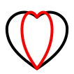
(x,y) yscaled a = (x,ay)
> (def c (scaled 1/100 (shifted -100 -100 (curve (pt 100 162) .. (pt 140 178) right .. (pt 195 125) down .. (pt 100 0) (curl 0) .. up (pt 5 125) .. right (pt 60 178) .. (pt 100 162)))))
> (penwidth 4 (draw (color "black" (draw c)) (color "red" (draw (yscaled 1/2 c))))) 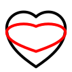
(x,y) yscaled a = (x+a,y+b)
> (def c (scaled 1/200 (shifted -100 -100 (curve (pt 100 162) .. (pt 140 178) right .. (pt 195 125) down .. (pt 100 0) (curl 0) .. up (pt 5 125) .. right (pt 60 178) .. (pt 100 162)))))
> (penwidth 4 (draw (color "black" (draw c)) (color "red" (draw (shifted 1/2 0 c))) (color "blue" (draw (shifted 0 1/2 c)))))
(x,y) zscaled a b = (ax-ay,bx+ay)
Note: (1,0) zscaled (a,b) = (a,b) , thus (1,0) is rotated and scaled into (a,b). Think of zscaled as “complex multiplaction”.
In the example, the red curve is multiplied with 0+1i, which corresponds to a rotation of 90 degrees.
In the example, the blue curve is multiplied with 1+1i, which corresponds to a rotation of 45 degrees. Also, since the magnitude of 1+1i is sqrt(2), the figure is scaled by the factor sqrt(2).
> (def c (scaled 1/200 (shifted -100 -100 (curve (pt 100 162) .. (pt 140 178) right .. (pt 195 125) down .. (pt 100 0) (curl 0) .. up (pt 5 125) .. right (pt 60 178) .. (pt 100 162)))))
> (penwidth 4 (draw (color "black" (draw c)) (color "red" (draw (zscaled 0 1 c))) (color "blue" (draw (zscaled 1 1 c))))) 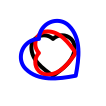
> (def c (scaled 1/200 (shifted -100 0 (curve (pt 100 162) .. (pt 140 178) right .. (pt 195 125) down .. (pt 100 0) (curl 0) .. up (pt 5 125) .. right (pt 60 178) .. (pt 100 162)))))
> (penwidth 4 (draw (color "black" (draw c)) (color "red" (draw (rotated 3.141592653589793 c)))))
> (def c (scaled 1/200 (shifted -100 0 (curve (pt 100 162) .. (pt 140 178) right .. (pt 195 125) down .. (pt 100 0) (curl 0) .. up (pt 5 125) .. right (pt 60 178) .. (pt 100 162)))))
> (penwidth 4 (draw (color "black" (draw c)) (color "red" (draw (rotatedd 180 c)))))
procedure
(rotated-about θ p) → trans?
θ : real? p : pt?
> (def c (scaled 1/200 (shifted -100 -100 (curve (pt 100 162) .. (pt 140 178) right .. (pt 195 125) down .. (pt 100 0) (curl 0) .. up (pt 5 125) .. right (pt 60 178) .. (pt 100 162)))))
> (penwidth 4 (draw (color "black" (draw c)) (color "red" (draw (rotated-about 3.14159 (pt 0.25 0) c) (pt 0.25 0)))))
procedure
(rotatedd-about θ p) → trans?
θ : real? p : pt?
> (def c (scaled 1/200 (shifted -100 -100 (curve (pt 100 162) .. (pt 140 178) right .. (pt 195 125) down .. (pt 100 0) (curl 0) .. up (pt 5 125) .. right (pt 60 178) .. (pt 100 162)))))
> (penwidth 4 (draw (color "black" (draw c)) (color "red" (draw (rotatedd-about 180 (pt 0.25 0) c) (pt 0.25 0))) (color "blue" (draw (rotatedd-about 90 (pt 0.25 0) c) (pt 0.25 0))))) 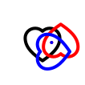
> (def c (scaled 1/200 (shifted -100 0 (curve (pt 100 162) .. (pt 140 178) right .. (pt 195 125) down .. (pt 100 0) (curl 0) .. up (pt 5 125) .. right (pt 60 178) .. (pt 100 162)))))
> (draw (curve (pt -1 -1) -- (pt 1 1)) (penwidth 4 (draw (color "red" (draw c)) (color "blue" (draw (reflected (pt -1 -1) (pt 1 1) c))))))
> (def c (scaled 1/200 (shifted -100 -100 (curve (pt 100 162) .. (pt 140 178) right .. (pt 195 125) down .. (pt 100 0) (curl 0) .. up (pt 5 125) .. right (pt 60 178) .. (pt 100 162))))) > (def t (shifted 1/2 0)) > (def s (inverse t))
> (penwidth 4 (draw (color "black" (draw c)) (color "red" (draw (t c))) (color "blue" (draw (s c)))))
> (def t (shifted 1 0)) > (def s (shifted 2 0)) > (trans~ (t t) s) #t
procedure
(compose-trans t s) → trans?
t : trans? s : trans?
procedure
(trans->vector t) → vector?
t : trans?
> (def t (shifted 42 0)) > (trans->vector t) '#(1 0 0 1 42 0)
procedure
(trans->transformation t) → vector?
t : trans?
> (def t (shifted 42 0)) > (trans->transformation t) '#(#(1 0 0 1 42 0) 0 0 1 1 0)
3.7 Device Settings
| (require metapict/device) | package: metapict |
parameter
(curve-pict-width width) → void? width : real?
= 100
parameter
(curve-pict-height height) → void? height : real?
= 100
The size is in device coordinates.
procedure
(set-curve-pict-size w h) → void?
w : real? h : real?
procedure
(set-curve-pict-size p) → void?
p : pict?
parameter
(curve-pict-window win) → void? win : window?
= (window -1.1 1.1 -1.1 1.1)
For most purposes, it is practical to keep the aspect ratio of the logical window the same as the device aspect ratio.
procedure
(trans-logical-to-device win device-width device-height) → trans? win : window device-width : real? device-height : real?
procedure
3.8 Drawing and Filling
| (require metapict/draw) | package: metapict |
A curve represents the path of a curve. Use draw and fill to create a picture in the form of a pict. Given a single curve, draw will use the current pen to stroke the path and fill will use the current brush to fill it.
The size of the pict created by draw and fill functions is determined by the parameters curve-pict-width and curve-pict-height.
The position of points, curves etc. are given in logical coordinates. A pict will only draw the section of the coordinate plane that is given by the parameter curve-pict-window. This parameter holds the logical window (an x- and y-range) that will be drawn.
Given no arguments, a blank pict will be returned.
Given multiple arguments, draw will convert each argument into a pict, then layer the results using cc-superimpose. In other words: it draws the arguments in order, starting with the first.
> (draw (curve (pt -1 0) .. (pt 0 1) .. (pt 1 0)) (pt 0 0) (bez (pt -1/2 0) (pt -1/2 1) (pt 1/2 1) (pt 1/2 0)) (label-bot "Origo" (pt 0 0)))
A curve divides the points of the plane in two: the inside and the outside. The inside is drawn with the brush and the outside is left untouched.
For a simple non-intersecting curve it is simple to decide whether a point is on the inside or outside. For self-intersecting curves the so-called winding rule is used. The winding rule is also used when filling multiple curves.
Given a point P, consider a ray from P towards infinity. For each intersection between the ray and the curve(s), determine whether the curve crosses right-to-left or left-to-right. Each right-to-left crossing counts as +1 and each left-to-right crossing as -1. If the total sum of the counts are non-zero, then the point will be filled.
> (defm (list r1 r2 r3 r4) (map curve-reverse circles))
For (fill c1 c3) the winding numbers are -1+1=0 and +1. Therefore the points inside c3 are not filled.

procedure
c : curve? fill-color : color? = #f draw-color : color? = #f
syntax
(for/draw (for-clause ...) body-or-break ... body)
syntax
(for*/draw (for-clause ...) body-or-break ... body)
3.9 Labels
| (require metapict/label) | package: metapict |
struct
string-or-pict : string-or-pict? pos : pt? plc/vec : placement-or-vec?
If plc/vec is the placement top, the label is drawn above the position. The provided placements are: lft, ulft, llft, rt, urt, lrt, top, bot, cnt.
If you need more control over the placment, you can use a vec vektor instead to indicate the direction from pos to the label placement.
struct
struct
struct
struct
struct
struct
struct
struct
struct
struct
procedure
str/pict : string-or-pict pos : pt?
procedure
(label-ulft str/pict pos) → label
str/pict : string-or-pict pos : pt?
procedure
(label-llft str/pict pos) → label
str/pict : string-or-pict pos : pt?
procedure
str/pict : string-or-pict pos : pt?
procedure
str/pict : string-or-pict pos : pt?
procedure
str/pict : string-or-pict pos : pt?
procedure
str/pict : string-or-pict pos : pt?
procedure
str/pict : string-or-pict pos : pt?
procedure
str/pict : string-or-pict pos : pt?
procedure
(dot-label-lft str/pict pos) → label
str/pict : string-or-pict pos : pt?
procedure
(dot-label-ulft str/pict pos) → label
str/pict : string-or-pict pos : pt?
procedure
(dot-label-llft str/pict pos) → label
str/pict : string-or-pict pos : pt?
procedure
(dot-label-rt str/pict pos) → label
str/pict : string-or-pict pos : pt?
procedure
(dot-label-urt str/pict pos) → label
str/pict : string-or-pict pos : pt?
procedure
(dot-label-lrt str/pict pos) → label
str/pict : string-or-pict pos : pt?
procedure
(dot-label-top str/pict pos) → label
str/pict : string-or-pict pos : pt?
procedure
(dot-label-bot str/pict pos) → label
str/pict : string-or-pict pos : pt?
procedure
(dot-label-cnt str/pict pos) → label
str/pict : string-or-pict pos : pt?
procedure
(label/offset str/pict pos offset) → label?
str/pict : string-or-pict? pos : pt? offset : vec?
procedure
(label-bbox l) → curve?
l : label?
procedure
(fill-label fill-color l) → pict?
fill-color : color? l : label?
3.10 Representation
| (require metapict/structs) | package: metapict |
This section describes the representation of the MetaPict concepts. The structures have already been described in this manual. The intent is to give an overview of the data structures in a single place.
> (def A (pt 3 4)) > A (pt 3 4)
> (defm (pt x y) A) > (list x y) '(3 4)
> (penwidth 4 (draw (pt 0 0) (pt 1/2 1/2) (pt 1 0)))
> (def v (vec 3 4)) > v (vec 3 4)
> (defm (vec x y) v) > (list x y) '(3 4)
> (def O origo)
> (with-window (window -1 5 -1 5) (ahlength (px 5)) (draw-arrow (curve O -- (pt+ O v))))
struct
(struct bez (p0 p1 p2 p3) #:extra-constructor-name make-bez) p0 : pt? p1 : pt? p2 : pt? p3 : pt?
struct
(struct window (minx maxx miny maxy) #:extra-constructor-name make-window) minx : real? maxx : real? miny : real? maxy : real?